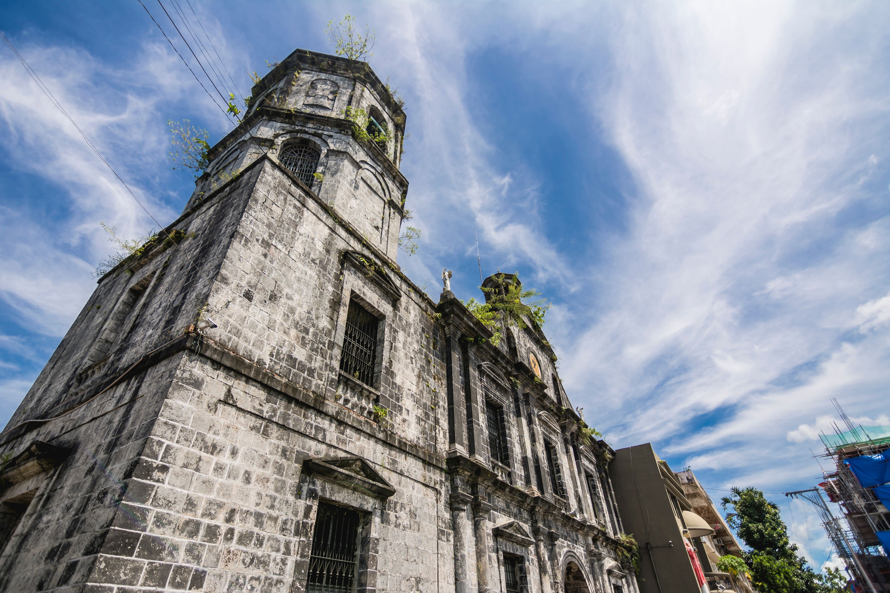
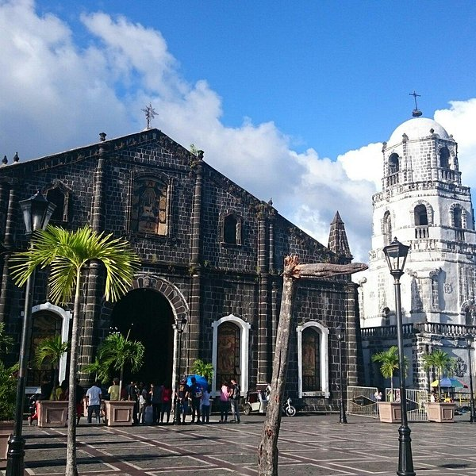
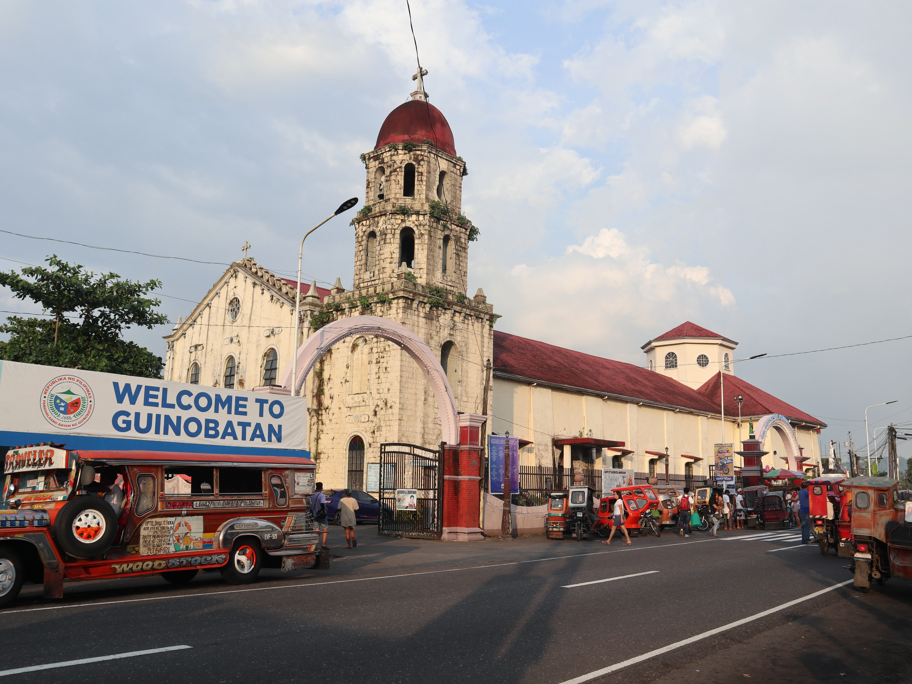

Explore the lively cities of Albay where modern attractions, local culture, and beautiful views come together.
City tourism in Albay gives visitors the chance to experience urban life while still enjoying the natural beauty of the province. The cities in Albay offer restaurants, shopping areas, landmarks, and scenic spots that make every visit enjoyable and memorable.

Legazpi City is the most popular city in Albay, known for its great view of Mayon Volcano, busy streets, and tourist-friendly attractions.

Ligao City is a peaceful place that offers local charm, open spaces, and easy access to natural attractions.

Tabaco City is known for its busy trade, local products, and gateway access to nearby islands and coastal destinations.

Guinobatan offers a quieter town atmosphere with beautiful surroundings and views close to Mayon Volcano.
Visitors can explore city streets, try local food, visit landmarks, and enjoy shopping areas. You can also take photos, visit public parks, and experience the daily life of the people in Albay. Some cities also offer scenic viewpoints, festivals, and relaxing places where visitors can unwind. Exploring the city is also a good way to learn more about the culture and lifestyle of the province.
Wear comfortable clothes and footwear since city tours may involve a lot of walking. Bring water, money, and a phone or camera for pictures. It is also helpful to plan your route ahead of time and visit early to avoid traffic or crowds. Always keep your things safe, follow local rules, and respect the places you visit.